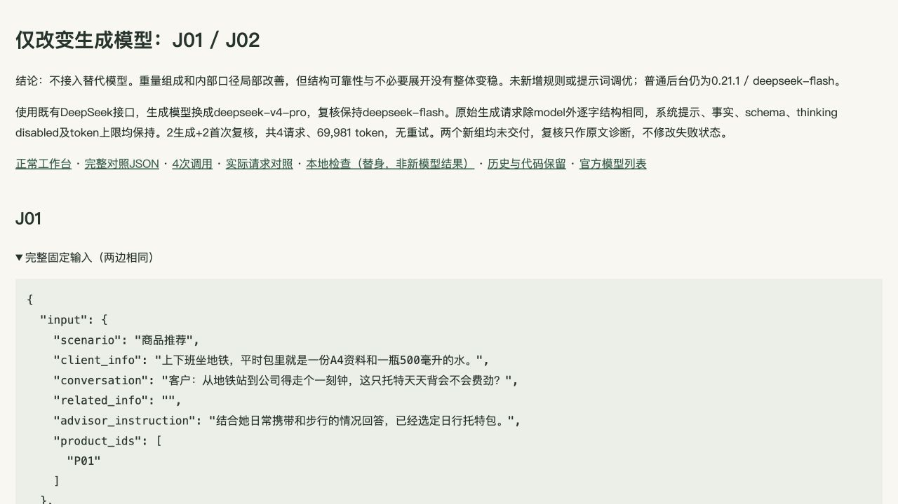
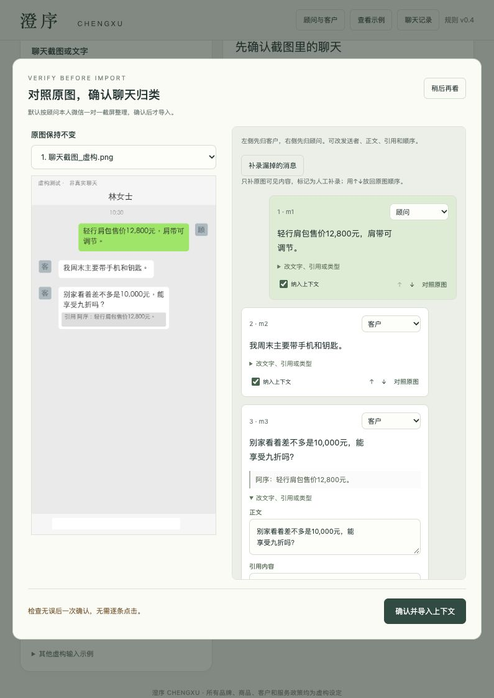

D · 评估：交付、事实、编辑与复核分别看
当前工具0.21.1。本轮只做打包、干净解压与运行检查，模型调用0，未重跑五十例。旧结果没有变成当前模型的新结果。
正式50例保留原样
完整150条原文 · 规定八列Excel · CSV。首四0.15.1、余46为0.15.2；初始34组交付、0.15.3统一离线35组，只是程序状态。原输入、原输出、原评分与失败不删；不是当前事实正确率。Excel的状态/评读附页与八列原表分别保留。
原50评估与逐案依据 · 原始阶段与重验。后续较好候选不替换原150条，已见开发案例不装作盲测。
后续有目的的修复证据
| 分支 |
程序与原复核 |
独立阅读及当前结论 |
| N16 |
0.19原三条；0.20补有效复核后交付 |
普通负重判断、相关试背已认可，结束，不再生成。旧无效复核留历史 |
| J01 Flash |
0.21首轮被误拦；同三条同复核在0.21.1离线交付 |
前两条组成清楚，第三条“这两项加上空包”指代不清，编辑限制仍保留 |
| J02 Flash |
0.21真实success/pass |
相关容量、品牌价和小标识均选入；第三条“不高报也不打折操作”仍是内部自述，不能因pass称全可直发 |
| J01 Pro |
原生三条合规；程序数量误拦，首次诊断needs_review |
组成较清楚；第三条被截成单独水重是程序错误。“完全”口气偏满可润色；复核把未提供写成不存在的理由不准确 |
| J02 Pro |
messages数组结构不合规；首次诊断pass，仍未交付 |
内部口径消失，但仍有买单、另找别款、再考虑等展开。不能据两案宣布更稳，未接入 |
0.20原文与尺度校正 · 0.21素材/原文/离线重验 · 完整模型并排对照。每轮call ledger保留目的、模型、版本、用量和原响应。Pro的两次复核是对保存文本的首次诊断，没有将被拦结果洗成success。
产品与评估截图
上图为0.21.1实际页面恢复J01保存结果；不是现场重新生成。可复制不等于三个候选都获人工编辑认可。

上图为真实对照报告截图，包含失败与独立意见；不是开发AI聊天截图。

上图为0.17工作台恢复时的实际截图复核证据，UI2.0.0沿用，明确为历史实测，不冒称本轮重新识别。正常首用、切换刷新、草稿/背景恢复已有走查；本轮干净启动与回放校验单列PACKAGING_CHECK，不用本地检查数量替代产品质量。
没有真人顾问愿发率、端到端节时或相对通用模型文案优势的结论。已做的是开发者模拟走查和逐句编辑评读；不同来源的判断可能不一致，有争议用原句说明。
连续演示补充
原静态截图回放按用户要求撤下。当前连续演示实际生成/复核各一次，三条模型原文见continuous_demo/REAL_RUN.json；选第三条复制，刷新恢复。此2请求与原打包的0请求分列，不替换正式50成绩。第一条多余追问记编辑问题，不调提示重抽。视频停顿加速，不作为节时证据。